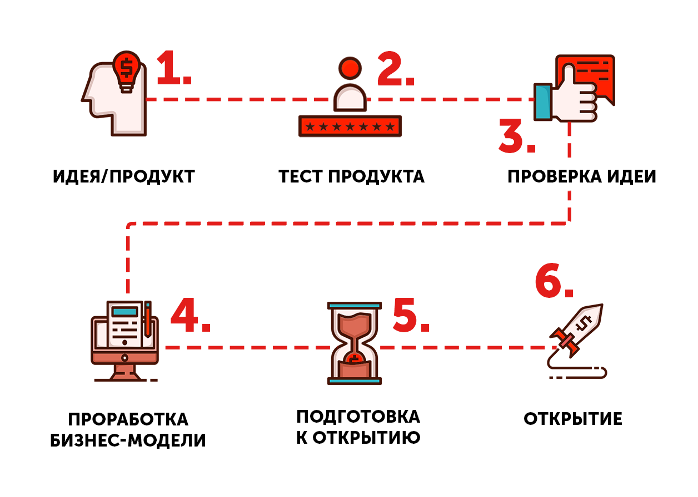
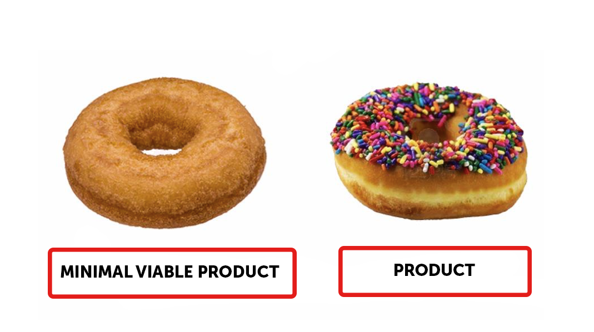
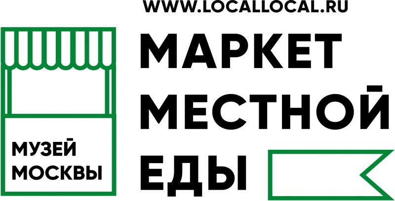

Курс: Как начать свое дело
МОДУЛЬ 1: СХЕМА СОЗДАНИЯ ГАСТРОНОМИЧЕСКОГО БИЗНЕСА НА ОСНОВАНИИ МЕТОДОЛОГИИ LEAN STARTUP

ЦЕЛЬ: Изучить технологию создания своего бизнеса в гастрономии с нуля с учетом современных подходов и технологий, меняющих мир. Проработать и протестировать продукт и убедиться, что вы готовы к открытию собственного дела.

ВРЕМЯ: На урок вы потратите около часа.
Многие считают, что для открытия своего дела надо сначала написать бизнес-план и все тогда получится. Раньше схема открытия ресторана была такая: Идея - бизнес-план - место - деньги - открытие - закрытие (9 из 10 кафе закрываются в течение 1-го года).
Итак, с чего же обычно начинают создавать свой бизнес? Любой бизнес начинается с идеи. Затем на основании этой идеи разрабатывают концепцию. Следующий шаг - составление бизнес-плана и подсчет экономики своего будущего дела - сколько затрат потребуется на открытие, какая будет окупаемость, какая может получиться рентабельность.
С этим бизнес-планом вы идете к инвестору, а потом ищете место для открытия (здесь последовательность уже не важна, может быть и наоборот - сначала место, потом деньги).
Для открытия кафе в Москве может потребоваться несколько миллионов рублей. У большинства начинающих бизнесменов таких денег нет, и они берут кредит. Только вот опыт показывает, что кафе, созданные по такой схеме, почему-то постоянно закрываются, а владельцы остаются с убытками и необходимостью отдавать кредит. Получается, что такая схема не очень-то и жизнеспособна. Что же в таком случае делать?
Чтобы не столкнуться с таким печальным финалом, мы предлагаем применить другую схему создания бизнеса. Нужно пересмотреть свой подход с самого начала.
ИМЕЙТЕ В ВИДУ
Для того чтобы открыть кафе в Москве вам потребуется от 3 до 10 миллионов рублей, и это средняя цифра для небольшой кофейни, конечно, всегда можно потратить больше, и десять, и сорок миллионов - не предел.
Технология Lean startup («бережливый стартап»)
Почему бы не попробовать построить гастрономический бизнес по тому же принципу, по которому в современном мире запускают технологические стартапы?
Существует эффективная концепция построения нового бизнеса без большого стартового капитала, которая так и называется Lean startup, то есть «бережливый стартап». Подход Lean startup строится на принципах проведения эксперимента, тестирования продукта до запуска в продажу, получения обратной связи от клиента, корректировке концепции на основании запросов покупателей и построения дела на основе бизнес-модели. Смысл в том, чтобы проверить как можно больше гипотез еще до полномасштабного запуска, чтобы сэкономить средства и избежать ошибок. На основании этих приемов мы разработали собственную схему построения бизнеса в сфере общепита и назвали её «Гастрономический стартап».

Основные этапы схемы «Гастрономический стартап»
Итак, у вас есть идея, вы ей горите. На основании этой идеи вы разработали концепцию и протестировали ее с минимальными затратами на небольшом количестве людей.
После этого у вас сразу появятся новые вводные, концепция обрастет подробностями. После детальной проработки изначальной концепции можно будет её проверить на большем количестве людей (здесь от вас уже потребуются некоторые вложения).
И только тогда, окончательно доведя концепцию до ума, продумав все детали, и убедившись, что она жизнеспособна, вы будете открывать кафе.
Таким образом, вы сможете проверить все ваши гипотезы на практике ДО того, как вложите в дело реальные деньги. Давайте разберем всю цепочку подробнее.
Концепция
Что это вообще такое? И чем она отличается от идеи бизнеса? Разные авторы, маркетологи и специалисты ресторанной сферы определяют концепцию по-разному- как идею, фишку заведения или даже подробное описание операционной деятельности и основных характеристик проекта, и все они по-своему правы. Но мы предпочитаем другое определение:
Концепция — это описание потребительского опыта посетителя ресторана, который он получает, оценивает, запоминает, и которым он делится с другими.
А идея — это всего лишь первый импульс к созданию бизнеса. Мы живем в удивительное время, когда идеи сами по себе ничего не стоят. Благодаря современным средствам передачи информации и распространению интернета идеи принадлежат всем, присвоить идею себе лично просто невозможно. Что действительно важно, так это детали и подход к делу — именно они и будут выделять ваш проект среди других.
ЗАПОМНИТЕ: РЕАЛИЗАЦИЯ ВАЖНЕЕ ИДЕИ
Идея
Но откуда взять стоящую идею? Как понять, какой бизнес «пойдет», а какой нет?
Идеи формируются в вашем воображении не сами собой, они складываются из ваших собственных ценностей и целей, помноженных на понимание рынка и запросов потенциальных покупателей.
Первое задание, которое мы даем всем, кто приходит в Местную еду на курсы и консультации: напишите на листочке в две колонки список всего, что вам нравится/не нравится. Дело в том, что долго, упорно и без денег, ведь в начале никаких денег у вас не будет, можно делать только то, что нравится (вспомните свое хобби). Например, если вы не любите фаст-фуд и решили им заниматься только потому что бургеры в тренде, вам либо придется его полюбить, либо заняться чем-то другим. Вы не сможете полностью отдавать себя в течение нескольких лет (а потребуется именно это) тому что вам не нравится и не особо вас интересует.
ВАШИ ЦЕННОСТИ – ЦЕННОСТИ ВАШЕГО ДЕЛА
Ваши личные ценности — это фундамент вашего бизнеса, вы должны положить их в основу миссии и целей вашей компании. Звучит романтично, но понимание ценностей своего дела и собственных целей очень облегчает продвижение.

ПРИМЕР
Например, вы приходите в вегетарианское кафе с уклоном в органику. Это очень модно. На странице кафе в фейсбуке написано, как для проекта важна экологичность — раздельный сбор мусора, никаких вредных химикатов, биоразлагаемые материалы. А лимонад вам наливают в пластиковый стакан. Если вам важна экологичность, вас это как минимум смутит, и вы больше не придете в это кафе, а ведь вы его непосредственная целевая аудитория. Почему так получается?
Видимо, для владельца это не было личной глобальной ценностью, на самом деле раздельный сбор мусора был ему глубоко безразличен, он просто следовал тренду. И персоналу, соответственно, судьба мусора тоже была безразлична, ведь если для владельца это не ценность, он не в состоянии оттранслировать это персоналу. И раздельный сбор мусора со временем превратился в какой-то ненужный напряг и головную боль.
Не тешьте себя иллюзиями, что клиенты ничего не заметят. На самом деле они увидят любую проблему в вашем кафе, вплоть до эмоционального состояния вашего персонала.
ЗАПОМНИТЕ
Основным элементом являются ваши личные ценности, именно из них будут формироваться ценности и цели вашей компании. По-другому просто не получится, потому что ваши клиенты чувствуют любую фальшь с вашей стороны.
Люди вообще очень чувствительны, куда больше, чем нам кажется.
Но выстраивая честную концепцию на фундаменте ваших ценностей, не забудьте сопоставить их со спросом.
ЛЮБОЙ БИЗНЕС ИМЕЕТ СМЫСЛ ТОЛЬКО ТОГДА, КОГДА РЕШАЕТ ПРОБЛЕМУ КЛИЕНТА
Сегодня, учитывая курс на разумное потребление и глобальную информатизацию общества, продать клиентам ненужный им товар практически невозможно. Проекты, основанные исключительно на личных представлениях их создателей об идеальном продукте, без учета реальной ситуации на рынке и понимания запросов и проблем покупателей, очень быстро прогорают.
Проанализируйте рынок: изучайте маркетинговые отчеты, наблюдайте за конкурентами, следите за трендами, и тогда вы не ошибетесь в выборе продукта и концепции!

ВАМ ПРИГОДИТСЯ
ВСЁ, ЧТО ВЫ ХОТЕЛИ УЗНАТЬ О ЛОНДОНЕ ОТ МИХАИЛА ЗЕЛЬМАНА
ИЗУЧИТЬ
МЫШЛЕНИЕ БИЗНЕСМЕНА: ЛЕКЦИЯ ФЁДОРА ОВЧИННИКОВА
ИЗУЧИТЬ
МЫШЛЕНИЕ БИЗНЕСМЕНА:
инструкция для предпринимателей
ИЗУЧИТЬ
Продукт
Основа вашего бизнеса – ваш продукт
Во главе угла всегда должен стоять продукт, он на первом месте. Предположим у вас есть идея — вы хотите сделать кафе шаговой доступности в вашем районе или вообще во дворе вашего дома. И вы говорите: «у меня пока нет продукта и меню, но есть концепция, можно начать без продукта?». Нет, нельзя. Начинать вам пока совершенно нет смысла, потому что вам нечего предложить клиенту.
Предположим, у вас появилась прекрасная идея — маленькая кофейня, в которой будут кофе и булочки со всего мира. Концепция классная, но продукта у вас нет, или есть, но он не продуман до конца, вы не вложили в него достаточно сил. Вы открылись, клиент забежал к вам, у него мало времени, он не увидел вывеску. В концепции разбираться этот клиент не хочет, он просто хочет булочку и кофе. Он совершает покупку, выходит, и понимает, что булка и кофе, ну как бы так себе, окей, но… так себе. Он не вернется к вам больше. Или, по крайней мере, он не захочет специально вернуться именно к вам, какой бы у вас ни был роскошный дизайн, обслуживание и музыка, если кофе не вкусный, остальное уже не сработает.
Поэтому запомните, продукт — это очень важно.
Круги Гисака
АЛЕКСЕЙ ГИСАК, создатель проекта "Воккер", придумал отличную схему, наглядно демонстрирующую важность продукта. Она так и называется - круги Гисака.
В центре всего вашего бизнеса лежит продукт. Он должен быть суперкрутым.
В следующем круге располагается сервис: как продавать ваш продукт, во что его упаковывать, как преподносить людям.
И только вокруг всей этой истории, в следующем круге, располагается концепция и идея.
Следующий круг - продвижение.
Так что получается, если ваш продукт так себе, все остальное не сработает. Многие компании тратят гигантское количество денег на то, чтобы купить рекламу в интернете или офлайн, на промоутеров с флаерами и пиар. А на самом деле, если у вас проблема с продажами и удержанием клиентов, в первую очередь вам надо разобраться с продуктом, доработать его. И тогда клиент попробует и обязательно потом скажет своим друзьям: «Ой, там так вкусно! Пошли все вместе?!».
Важнее вашего продукта можете быть только ваш покупатель. Знаете, почему? Потому что любой бизнес существует лишь благодаря клиентам. Без понимания их запросов практически невозможно создать успешный продукт и успешную концепцию.
Выше мы уже говорили, как важно учитывать потребности клиентов при разработке концепции. Учтите, что вашими клиентами будут не какие-то особенные, соответствующие строгим характеристикам личности, а разные, зачастую совершенно непохожие друг на друга (и, главное, на вас самих) люди. Поскольку вы планируете обслуживать в своем кафе не только друзей и знакомых, убедитесь, что ваш продукт соответствует спросу. Вам, конечно, может казаться, что ваши торты самые классные, а публика этого просто не понимает, значит, наверное, с публикой что-то не так. Но вам придется работать именно с теми клиентами, которые есть; все-таки продукт создается под клиента, а не наоборот.
Успех вашего дела будет зависеть только от вас
Да, мы понимаем, что это звучит как начало мотивационной лекции, но тут ничего не поделаешь, залог успеха вашего бизнеса - ваш настрой. Свой бизнес - это стиль жизни. Это не просто трудозанятость, это часть вашей личности.
Чтобы стать успешным предпринимателем, вы должны обладать тремя чертами характера:
УВЛЕЧЕННОСТЬ —
это ваш энтузиазм, степень интереса как к своему делу, так и к жизни вообще. Нужно понимать, что энтузиазм не появляется на ровном месте. Он приходит после долгой работы над собой или как результат дисциплины. Его можно и нужно в себе развивать, хотя порой это сложно.
ТАЛАНТ —
не думайте, что это что-то уникальное. Таланты есть у всех. В чем-то вы наверняка более успешны, что-то у вас получается особенно хорошо. Это может быть что угодно - умение вставать супер рано, умение разговаривать с людьми, умение просто улыбаться, умение постоянно двигаться, умение шикарно вести бухгалтерию. Какой-нибудь талант найдется у каждого, и, главное, его можно развить, это как умение ездить на велосипеде. Но для того, чтобы развить таланты вам придется потрудиться. Самая тяжелая работа – это работа над собой.
ПРЕДПРИИМЧИВОСТЬ —
это ваша инициативность, помноженная на смелость, способность совершать реальные поступки для пользы вашего дела. Не стоит думать, что если предприимчивость не дана вам от природы, то ничего и не получится. Для того чтобы стать предприимчивым придется развивать трудоспособность и силу воли. Например, что-то у вас в кафе пошло не так, поток клиентов снизился. Что вы сделаете? Просто переждете спад? Или, наверное, подумаете: "Надо пойти раздать флаеры, но я так стесняюсь!". И никуда не пойдете.
Ну и зря! Здесь вам как раз нужно проявить инициативу и настойчивость, вы должны быть нацелены на результат. Это ваше дело, и, если это не нужно вам, значит это не нужно никому. Идете и говорите: «Здравствуйте, я лично открыл это кафе, заходите ко мне, пожалуйста, я буду так вам рад».
Придется сначала поработать над собой, прокачать свои увлеченность и энтузиазм.
Вы действительно должны все время быть увлечены своим делом, оно должно стать для вас источником вдохновения. Вам придется стать предприимчивым, научиться проявлять инициативу и побороть свой страх.
Продукт
Итак, мы выяснили, что центром вашего бизнеса должен стать ваш продукт. Теперь нужно разобраться, как лучше детально проработать ваш продукт и довести его до совершенства.
Minimal Viable Product
В этом нам поможет еще одна схема, которую применяют в бизнес-школах для работы над технологическими стартапами. Она называется Minimal Viable Product (минимально жизнеспособный продукт) или MVP. Эта схема строится на предположении, что у всех покупателей есть проблема, которую вы можете помочь им решить при помощи вашего продукта.
Например, на нашей картинке MVP- простой пончик. На основании этого пончика вы разрабатываете несколько вариантов продукта и проверяете, как покупатели будут реагировать на разные начинки и глазури. В итоге вы останавливаетесь на варианте с глазурью и цветной посыпкой, так как он лучше всего соответствует запросам вашей аудитории.
Так что попробуйте работать с клиентами, они помогут вам лучше разобраться в собственном продукте. Можете придумать некий конструктор, и посмотреть какие комбинации чаще заказывают, можете выяснять предпочтения покупателей просто в режиме диалога.
К счастью, начать применять эту схему можно (и нужно) еще ДО того, как вы откроете кафе. Полезно протестировать предпочтения покупателей, проверить достаточно ли хорош ваш продукт, нормальная ли у него цена, быстро ли он готовится и отдается покупателю, умеете ли вы продавать, и что вообще думают об этом люди до того, как вы вложите в дело деньги.

Minimal Viable Product
ЧТОБЫ МИНИМИЗИРОВАТЬ РИСКИ, СНАЧАЛА ВЫ СОЗДАЕТЕ ПРОСТЕЙШИЙ БАЗОВЫЙ ВАРИАНТ ПРОДУКТА. А УЖЕ ПОТОМ, ПРОТЕСТИРОВАВ ЭТОТ ПРОСТЕЙШИЙ ПРОДУКТ, ВЫ БУДЕТЕ УСЛОЖНЯТЬ ЕГО ХАРАКТЕРИСТИКИ И ПОДГОНЯТЬ ЕГО ПОД ЗАПРОСЫ АУДИТОРИИ.
Тестирование продукта
Как же можно проверить продукт, не имея своего кафе? На самом деле, для этого есть несколько возможностей:
Фестивали/маркеты/ярмарки
В городах сегодня проходит очень много маркетов и ярмарок, музыкальных и других фестивалей, где есть фуд-корты. Это классная возможность для гастроэнтузиастов, людей у которых пока нет своей точки, проверить свой продукт на реальной публике.
Например, Маркет Местной еды был придуман именно для этих целей. Одновременно на одной площадке собирается около 20- 30 проектов и приходит пять - десять тысяч человек. Соответственно, на этом огромном количестве людей вы можете проверить любую сторону своей идеи: и цену, и как вы выдаёте продукт, и сможете ли вы общаться с клиентами - люди приходят разные.
Если у вас в городе нет фестивалей или вы по какой-то причине не хотите в них участвовать, ничего страшного, есть другие варианты.

МАРКЕТ МЕСТНОЙ ЕДЫ
Сейчас маркет в Музее Москвы проводятся ежемесячно. Хотите принять участие в Маркете Местной еды? Вы можете оставить заявку, когда придет время.
Сотрудничество с дружественным бизнесом
Например, у вас есть друг, у него кофейня, где он торгует только кофе, а вот десерты у него не предусмотрены. Вы могли бы сделать у него в углу маленький корнер или давать ему десерты на продажу. Предложите закупить ваше печенье несетевой бургерной в вашем районе, возможно, им пойдет на пользу расширение ассортимента, а вы сможете проверить свою концепцию. То же самое можно попробовать сделать, например, в магазине, музее, фитнесс-клубе и даже автомастерской.
Вариант для самых стеснительных — сделайте поп-ап кафе для своих знакомых. Например, у Пети день рождения, предложите ему такой вариант: «Петя, ты же все равно будешь едой заниматься, а давай я сделаю поп-ап кафе, ты мне только продукты компенсируешь, ну вместе сойдемся на некоторой сумме, а я все организую. Будет что-то вроде кафе и твоим гостям будет интересно, и я заодно проверю свою идею»..
В общем, варианты у вас есть, главное набраться смелости и попробовать.
Итак, вы протестировали продукт, поняли, что цена и качество всех устраивают, что спрос есть и вам нравится продавать. Теперь вы уверены, что готовы открывать свое кафе, что вам есть что предложить людям.
И сейчас мы разберем всё это на реальном кейсе от наших друзей из "Дагестанская лавка". Реальная история, факты и цифры.

КЕЙС
«Дагестанская лавка» (ранее известная как «Чуду»)
Участие в маркетах и ярмарках полезно по нескольким причинам: оно помогает понять, достаточно ли хорош ваш продукт, какой на него спрос, как обстоят дела с технологией приготовления и продаж, как идет общение с покупателями. Но это еще не все – именно на маркетах вы можете начать формировать лояльную аудиторию, а некоторым удается даже заработать на маркетах на старт!
Например, проект «Дагестанская лавка». При помощи регулярного участия в ярмарках, маркетах и фестивалях ребята не только убедились в том, что их продукт пользуется спросом, но и заработали на открытие своей первой розничной точки.
«ДАГЕСТАНСКАЯ ЛАВКА»
Открытие розничной точки стало возможным благодаря участию в тематических мероприятиях
Бизнес-концепция:
«Дагестанская лавка», специализирующаяся на продаже национальной продукции. На маркетах и фестивалях они представлены в формате моно-фаст-фуда, в меню только лакские пироги (собственно, они и называются чуду) с разными начинками.
Почему было принято решение об участии в маркетах?
Изначально был выбран другой формат, продукцию планировали продавать в супермаркеты. Но оказалось, что небольшой компании не так-то просто закрепиться в мире сетевого ритейла. Есть множество нюансов — от оплаты «входного билета» в торговые сети до необходимости конкурировать с крупными производителями с огромными маркетинговыми бюджетами, и все это при сравнительно низкой рентабельности.
Поэтому команда «Чуду» решила переключиться на формат «уличной еды». Наименее рискованный и один из самых прибыльных способов торговли уличной едой — это маркеты.
«Когда мы вырабатывали стратегию, мы решили — беремся за все, лишь бы про нас узнали, вне зависимости от возможных продаж. Но в итоге это оказался еще и хороший заработок. Я даже не знал, что в Москве проходит столько фестивалей и мероприятий. Наш рекорд — 4 мероприятия за выходные».
Что дало участие в маркетах?
Для Чуду это оказалось отличной возможностью заявить о себе и понять, будет ли спрос на их продукцию у городской молодежи. Помимо того, что ребята получили ответы на все свои вопросы, для них участие в маркетах оказалось еще и отличной возможностью заработать. Для понимания масштаба - их максимальные продажи на Городском Маркете Еды составили 1200 порций в день.
Что потом?
Благодаря регулярному участию в маркетах у продукта появились свои фанаты и история, бренд стал узнаваемым. За все время участия в подобных мероприятиях «Чуду» удалось заработать около миллиона рублей. Уже после года маркетов и ярмарок у проекта открылась своя первая точка на Даниловском рынке.
Проверка бизнес-идеи
Но не спешите составлять бизнес-план и привлекать инвестиции, мы предлагаем вам пойти более безопасным (с финансовой точки зрения) путем. Для того, чтобы минимизировать риски нужно сначала проверить жизнеспособность самой концепции вашего бизнеса. Для этого мы составим бизнес-модель, распишем ключевые процессы вашего бизнеса и проанализируем рынок.
Несовершенство бизнес-плана
К сожалению, в современном мире опираться на бизнес-план как на единственный документ, описывающий экономическую модель вашего проекта очень рискованно. Этот подход давно устарел. Основная проблема в том, что бизнес-план — документ исключительно теоретический, в нем слишком много неизвестных.
Обычно бизнес-план составляют следующим образом: выписывают все расходы, и, в зависимости от пропускной способности и площади кафе (напоминаем, что на этом этапе у нас даже нет помещения), считают окупаемость. Основная идея — выяснить сколько денег нужно вложить, чтобы начать зарабатывать сумму Х через У времени.
К сожалению, это уравнение со сплошными неизвестными. На самом деле, вы совершенно не знаете, сколько людей к вам будет заходить. И какой у вас будет средний чек вы тоже не знаете. Вы можете, конечно, очень примерно предположить, создав какое-то меню, но заранее знать вы не можете. И вы уж совершенно точно не знаете, насколько эффективно будут работать ваши сотрудники.
НАЧИНАЮЩЕМУ БИЗНЕСМЕНУ
лучше работать с бизнес-моделью, а не с бизнес-планом. Сегодня все стартапы на Западе строят именно на основании бизнес-модели, этот подход сегодня практикуют практически во всех ведущих бизнес-школах.
Преимущества бизнес-модели
Грубо говоря, это модель того, как будет взаимодействовать ваш продукт или услуга с вашими клиентами и партнерами.
То есть, бизнес-модель анализирует, в первую очередь, процессы, на которых будет строится ваше предприятие; это более широкое понятие, чем бизнес-план, в котором вы просчитываете исключительно денежные потоки, теоретическую прибыль и убытки.
Деньги вам, разумеется, тоже придется считать, но делать мы это будем чуть позже и уже имея в голове (и на бумаге) готовую бизнес-модель.
Выводы
На самом начальном этапе создания своего бизнеса воспользуйтесь технологией Lean startup, это поможет вам минимизировать финансовые риски.
Самое главное не идея заведения, а продукт. Продумайте свой продукт, протестируйте его, и убедитесь, что он достаточно хорош во всех смыслах: вкус, цена, скорость подачи.
Для проработки продукта воспользуйтесь еще одним приемом, применяемым для создания стартапов - Minimal Viable Product. Пусть клиенты сами примут участие в работе над продуктом!
МОДУЛЬ 2
Заполнение шаблона бизнес-модели и анализ рынка
МОДУЛЬ 2
Заполнение шаблона бизнес-модели и анализ рынка
ЦЕЛЬ: Составить детальное видение своего будущего бизнеса не только в голове, но и на бумаге, проанализировать потенциальных конкурентов и отрасль в целом
ВРЕМЯ: На урок вы потратите около часа.
ЦЕЛЬ: Составить детальное видение своего будущего бизнеса не только в голове, но и на бумаге, проанализировать потенциальных конкурентов и отрасль в целом
ВРЕМЯ: На урок вы потратите около часа